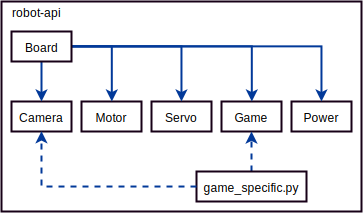

Robot API
Robot API
- Students directly use this code
- Installed on the robots
- Speaks to robotd
- Documented in the docs
Robot-api structure
Each board instance connects to `robotd` over unix sockets
How to use robot-api
import robot
r = robot.Robot()
it's that simple!
Then you can use it to i.e. set motors
import robot
# Go forwards
r.motor_board.m0 = 1
How does it detect boards?
It does everything lazily, when you call:
r.motor_boardIt then tries to connect to the motor board socket and remembers that it exists.
Usability trick: Seeing Markers
A common problem with teams is the following code
markers = r.see()
closest = markers[0]What if there are 0 markers?
The error is very unreadable for someone new to python:
IndexError: list index out of rangeOur Solution
r.see returns something that pretends to be a list.
It has all properties of a list, but has a special behaviour if you call:
markers[0]if you call it, it errors with "Trying to index an empty list".